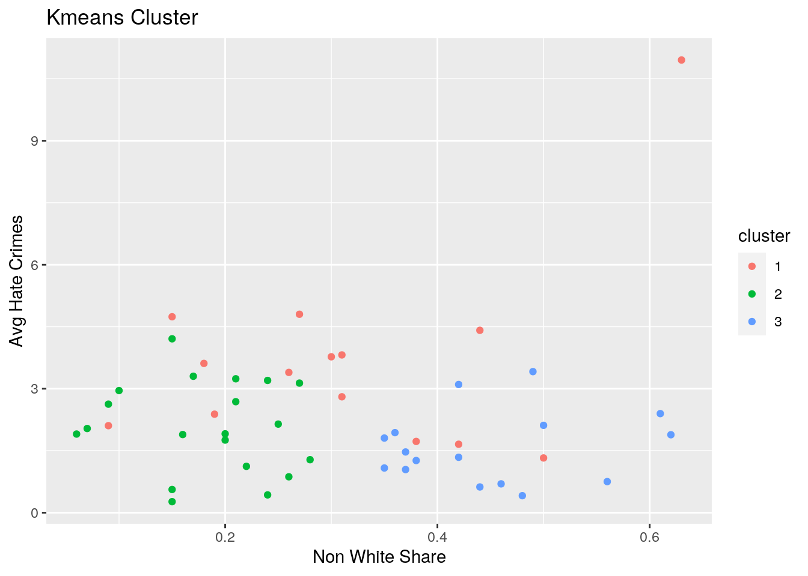

The datasets I have chosen are from the package fivethirtyeight. One of the datasets carries the statistics on the different regions and divisions in the United States and the other dataset compares hate crime to income inequality for each state. Variables include unemployment rate, median household income, white and non white residents, and annual hate crime rate. These are interesting datasets as hate crimes continue to be seen throughout the US and I wanted to see if there was any links with any of the datasets including region, division, and income inequality. I predict there will be more hatecrimes in regions with higher minorities just due to more possibility.
tidyr functions pivot_longer/gather and/or pivot_wider/spread)library(tidyverse)
library(fivethirtyeight)
# already tidy. Used 'pivot_longer' on question 4.dplyr join functionjoineddata <- full_join(hate_crimes, state_info, by = "state")
head(joineddata)## # A tibble: 6 x 16
## state state_abbrev.x median_house_inc share_unemp_seas share_pop_metro
## <chr> <chr> <int> <dbl> <dbl>
## 1 Alab… AL 42278 0.06 0.64
## 2 Alas… AK 67629 0.064 0.63
## 3 Ariz… AZ 49254 0.063 0.9
## 4 Arka… AR 44922 0.052 0.69
## 5 Cali… CA 60487 0.059 0.97
## 6 Colo… CO 60940 0.04 0.8
## # … with 11 more variables: share_pop_hs <dbl>, share_non_citizen <dbl>,
## # share_white_poverty <dbl>, gini_index <dbl>, share_non_white <dbl>,
## # share_vote_trump <dbl>, hate_crimes_per_100k_splc <dbl>,
## # avg_hatecrimes_per_100k_fbi <dbl>, state_abbrev.y <chr>, division <chr>,
## # region <chr>Each of my datasets had the same number of rows because each of the datasets is by state totaling 51 observations for each (one extra for Distric of Columbia). Nothing was dropped in the ‘full_join’ as the ID variables matched perfectly. Since the IDs (rows) matched, all the joins would have looked the same and no rows would have been dropped in any of the joins.
dplyr functions in the service of generating summary tables/statistics (12 pts)
summarize alone and with group_by (if you have more than 10 variables, fine to just focus on 10) (20 pts)
diverse <- joineddata %>% filter(share_non_white >= 0.25) %>%
arrange(avg_hatecrimes_per_100k_fbi) %>% select(-2, -7, -9,
-14, -11, -12) %>% mutate(income_crime = median_house_inc/avg_hatecrimes_per_100k_fbi)
head(diverse)## # A tibble: 6 x 11
## state median_house_inc share_unemp_seas share_pop_metro share_pop_hs
## <chr> <int> <dbl> <dbl> <dbl>
## 1 Geor… 49555 0.058 0.82 0.839
## 2 Miss… 35521 0.061 0.45 0.804
## 3 Flor… 46140 0.052 0.96 0.853
## 4 Texas 53875 0.042 0.92 0.799
## 5 Arka… 44922 0.052 0.69 0.824
## 6 Illi… 54916 0.054 0.9 0.864
## # … with 6 more variables: share_white_poverty <dbl>, share_non_white <dbl>,
## # avg_hatecrimes_per_100k_fbi <dbl>, division <chr>, region <chr>,
## # income_crime <dbl>diverse %>% group_by(region) %>% summarize(hatecrime = mean(avg_hatecrimes_per_100k_fbi,
na.rm = T), sd(avg_hatecrimes_per_100k_fbi, na.rm = T), min(avg_hatecrimes_per_100k_fbi,
na.rm = T), max(avg_hatecrimes_per_100k_fbi, na.rm = T))## # A tibble: 4 x 5
## region hatecrime `sd(avg_hatecrimes_… `min(avg_hatecrime… `max(avg_hatecrime…
## <chr> <dbl> <dbl> <dbl> <dbl>
## 1 Midwest 1.59 0.778 1.04 2.14
## 2 Northe… 3.47 1.39 1.28 4.80
## 3 South 1.96 2.58 0.412 11.0
## 4 West 2.69 0.796 1.66 3.82diverse %>% group_by(region, division) %>% summarize(median(avg_hatecrimes_per_100k_fbi,
na.rm = T))## # A tibble: 9 x 3
## # Groups: region [4]
## region division `median(avg_hatecrimes_per_100k_fbi, na.rm = T)`
## <chr> <chr> <dbl>
## 1 Midwest East North Central 1.04
## 2 Midwest West North Central 2.14
## 3 Northeast Mid-Atlantic 3.76
## 4 Northeast New England 3.77
## 5 South East South Central 1.81
## 6 South South Atlantic 1.40
## 7 South West South Central 0.975
## 8 West Mountain 2.46
## 9 West Pacific 2.90It was interesting to find out that the region with the most annual hatecrimes was the Norteast on average. The South was also very interesting as it has the state with the least amount of annual hatecrimes, Georgia, and the territory with the most, District of Columbia (DC). DC is an outlier though because it is greater than 3 standard deviations from the mean which is likely due to its dense political area but small geographic area. I also found that states in the Mid Atlantic division (NY,PA,NJ) experienced the most hate crime annually while states in the West South Central (AR,LA,OK,TX) experienced the least.
Create a correlation heatmap of your numeric variables the way we did in class
Create two more effective, polished plots with ggplot
cormat <- joineddata %>% select_if(is.numeric) %>% cor(use = "pair")
tidycor <- cormat %>% as.data.frame %>% rownames_to_column("var1") %>%
pivot_longer(-1, names_to = "var2", values_to = "correlation")
tidycor %>% ggplot(aes(var1, var2, fill = correlation)) + geom_tile() +
scale_fill_gradient2(low = "red", mid = "white", high = "blue") +
geom_text(aes(label = round(correlation, 2)), color = "black",
size = 2) + theme(axis.text.x = element_text(angle = 90,
hjust = 1)) + coord_fixed()ggplot(joineddata, aes(share_non_citizen, share_pop_metro)) +
geom_point(aes(color = region)) + geom_smooth(method = "lm") +
scale_y_continuous(breaks = seq(0, 1.5, 0.25)) + ggtitle("Metro v Non US Citizen") +
ylab("Metropolitan %") + xlab("Non US Citizen")In this graph, I wanted to compare two of the variables with the highest correlation. The variables ‘share_pop_metro’ and ‘share_non_citizen’ had a correlation coefficient of 0.75. The implications are that non US citizens tend to live more in metropolitan areas. The more non US citizens there are in a state, the higher the share of the state population that lives in metropolitan areas.
ggplot(joineddata, aes(x = region, y = avg_hatecrimes_per_100k_fbi,
fill = division)) + geom_bar(stat = "summary", fun = mean) +
ggtitle("Hate Crimes by Region and Division") + ylab("Hate crimes/100k population") +
xlab("Region")This grouped bar chart shows the total number of hate crimes per 100,000 people in each region and division. This is different than the the previous means taken by region in question 3 because instead of averaging out the regions by division, it adds the means of each division to get the totals for region. For example, the South region has 3 divisions that are added together which makes it the largest but if the three divisions were averaged out it would have the least average hate crimes per 100,000 people as seen in question 3. This is an interesting graph comparing the totals for each of the regions and divisions for annual hate crimes.
Either k-means/PAM clustering or PCA (inclusive “or”) should be performed on at least three of your variables (3 is just the minimum: using more/all of them will make this much more interesting!)
project1 <- joineddata %>% select(3, 10, 13) %>% slice(-12)
kmeans1 <- project1 %>% scale %>% kmeans(3)
kmeans1## K-means clustering with 3 clusters of sizes 14, 20, 16
##
## Cluster means:
## median_house_inc share_non_white avg_hatecrimes_per_100k_fbi
## 1 1.2030329 0.0705977 0.7650951
## 2 -0.3054402 -0.8090269 -0.1698458
## 3 -0.6708535 0.9495107 -0.4571509
##
## Clustering vector:
## [1] 3 1 3 2 3 1 1 3 1 3 3 2 3 2 2 2 2 3 2 1 1 2 1 3 2 2 2 3 1 1 3 3 3 1 2 3 1 2
## [39] 2 3 2 2 3 1 2 1 1 2 2 2
##
## Within cluster sum of squares by cluster:
## [1] 42.03431 19.40369 16.53206
## (between_SS / total_SS = 47.0 %)
##
## Available components:
##
## [1] "cluster" "centers" "totss" "withinss" "tot.withinss"
## [6] "betweenss" "size" "iter" "ifault"kmeansclust <- project1 %>% mutate(cluster = as.factor(kmeans1$cluster))
kmeansclust %>% ggplot(aes(share_non_white, avg_hatecrimes_per_100k_fbi,
median_house_inc, color = cluster)) + geom_point() + ggtitle("Kmeans Cluster") +
ylab("Avg Hate Crimes") + xlab("Non White Share") In this graph, I found the kmeans cluster for my dataset using the variables ‘share_non_white’,‘avg_hatecrimes_per_100k_fbi’, and ‘median_house_inc’. The reason I chose these variables is because I wanted to see how these variables grouped together. It was pretty tough finding accurate clusters as the variables were not strong correlations with one another as shown by the heatmat above.